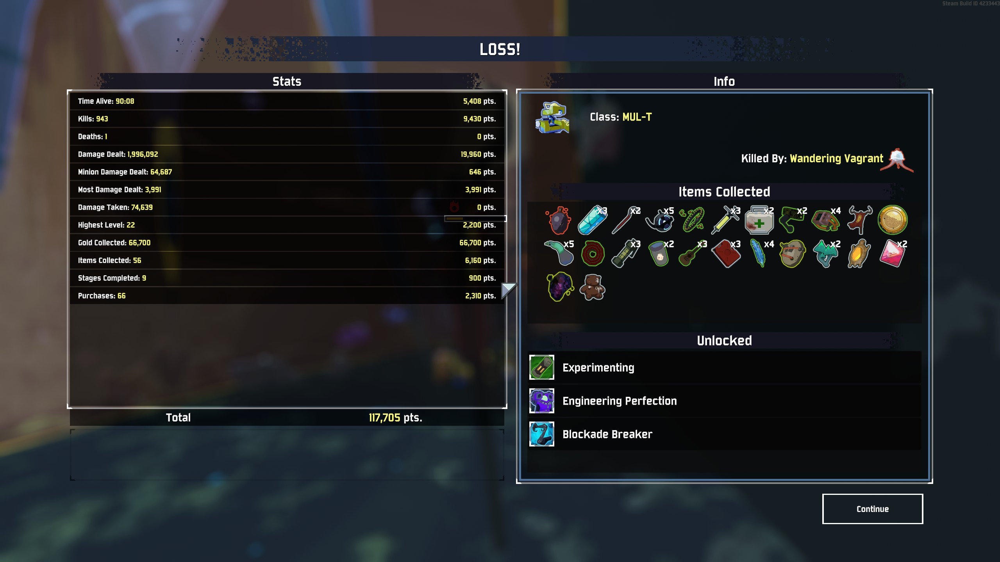

How a Game Saves Matters
Save system can often defines a game.

Saving is one of the most rudimentary functions a game has, and players might not realize how important it can be for game design. It often defines a game.
 For normal single-players, especially RPGs and other story-telling games, Game
saving is available to you almost 24/7, except special moments such as cutscene or
combat of course. Games such as Fallout: New Vegas are notorious for their long lists of
save files when the player is trying to load game. The motivation of this implementation of saving
system is obvious since players usually want to try out new routes or choices in
those games and having the option to save when wanted is helpful and encourages
players to fully explore what those games have to offer. In recent years however,
more choice-driven games are trying to limit the player’s ability to save to add
the weight of each choice and increase realism. Thronebreaker: The Witcher Tales for
example, only gives the player the option to save once in each chapter (at the start). Each chapter
consists of a whole map and the player has to take the consequence of each choice
along the journey; while it adds tensions in game moments, there are mix reactions on
the game’s save system from players. Kingdom Come: Deliverance has its own unique take
on saving system. In this Skyrim like RPG, the player can
only manually save the game if the in-game character consumes an item called “Savior
Schnapps”, a potion that has to be bought from merchants or brewed at an Alchemist’s
bench (as shown from the wording at the bottom right corner of the image above). Unlike any other RPGs I have played, this save system design blows
a fresh wind into a rather stagnant single-player RPGs’ save approach. Instead of
forcefully limiting the ability to save the game, Kingdom Come: Deliverance provides
a way for the player to save the game technically at any time while maintaining the
significance of the player’s decisions in the game world as saving cannot be taken for
granted. This creative approach deserves its applause.
For normal single-players, especially RPGs and other story-telling games, Game
saving is available to you almost 24/7, except special moments such as cutscene or
combat of course. Games such as Fallout: New Vegas are notorious for their long lists of
save files when the player is trying to load game. The motivation of this implementation of saving
system is obvious since players usually want to try out new routes or choices in
those games and having the option to save when wanted is helpful and encourages
players to fully explore what those games have to offer. In recent years however,
more choice-driven games are trying to limit the player’s ability to save to add
the weight of each choice and increase realism. Thronebreaker: The Witcher Tales for
example, only gives the player the option to save once in each chapter (at the start). Each chapter
consists of a whole map and the player has to take the consequence of each choice
along the journey; while it adds tensions in game moments, there are mix reactions on
the game’s save system from players. Kingdom Come: Deliverance has its own unique take
on saving system. In this Skyrim like RPG, the player can
only manually save the game if the in-game character consumes an item called “Savior
Schnapps”, a potion that has to be bought from merchants or brewed at an Alchemist’s
bench (as shown from the wording at the bottom right corner of the image above). Unlike any other RPGs I have played, this save system design blows
a fresh wind into a rather stagnant single-player RPGs’ save approach. Instead of
forcefully limiting the ability to save the game, Kingdom Come: Deliverance provides
a way for the player to save the game technically at any time while maintaining the
significance of the player’s decisions in the game world as saving cannot be taken for
granted. This creative approach deserves its applause.
Gamers must have heard the term “checkpoint” in games, it marks down and saves the player’s progress at a specific point in game. It is commonly used in adventure games. In many platformers such as Crash Bandicoot, it is the only way for player to save progress in a level. There have been more unique uses of checkpoint in the last decade. One example is Dark Souls; in all Dark Souls games and other souls like, the player has to reach a bonfire like checkpoint to save the character’s progress. If the player dies during the adventure, all souls like currency will be gone and the player has to start everything again since the last checkpoint (Different from platformers since Dark Souls technically has only one level: the world). The key concept of checkpoint is to segment the game into parts for the player to go through; Dark Souls makes each segment difficult and painful for the player, and the pain is actually what makes the game phenomenal. Beating a tough boss after many attempts and reaching that brand-new bonfire is always other-worldly satisfying to the player.
 If you want to see even crazier save mechanics, check out roguelike games. While roguelike games usually are remembered for their procedural generated levels, they often have somewhat extreme save system. Take Risk of Rain 2, a roguelike third-person shooter for example; the player only has one life in a whole run. If the character is killed, the whole game (a run) is over and the player has to play the whole game all the way again (as shown from the image on the left). Incorporating it with the game’s randomly generated levels and gears, the player is encouraged to try many runs, to collect more items and get good (better). Many other roguelike games such as The Binding of Isaac use similar designs. Randomly generated levels together with essentially "non-existent" saving system makes roguelike games special and great.
Saving, the most common feature in video games, can often make all the difference. From allowing the player to save at any time to no save at all, a save system can make a game unique and interesting in its own ways. As the game industry expands bigger and bigger, other mind-blowing game save designs will definitely show up and make gaming even greater.